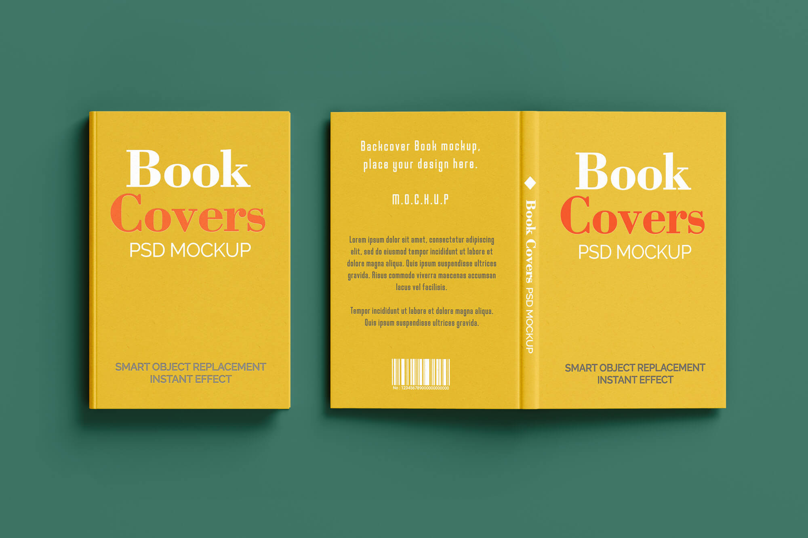
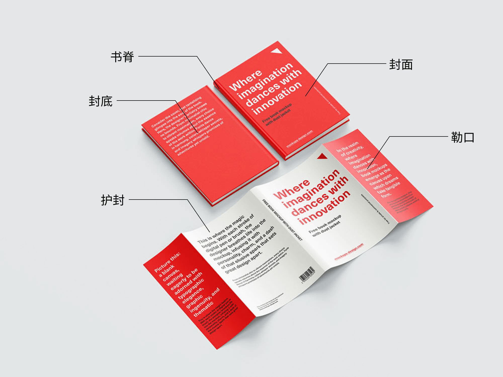
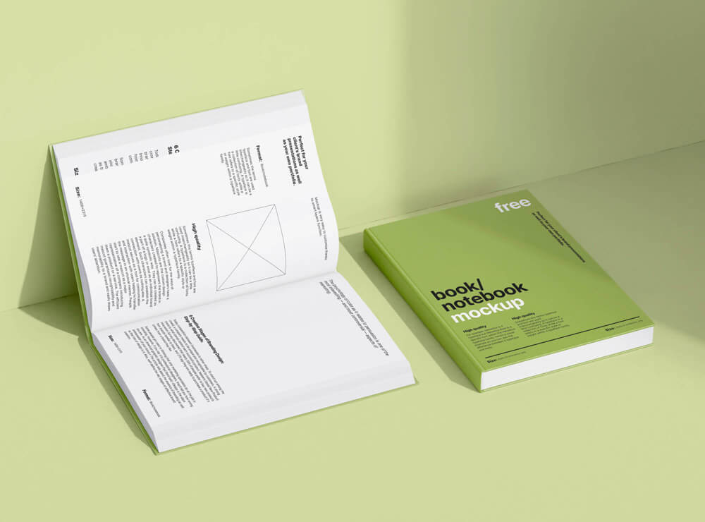
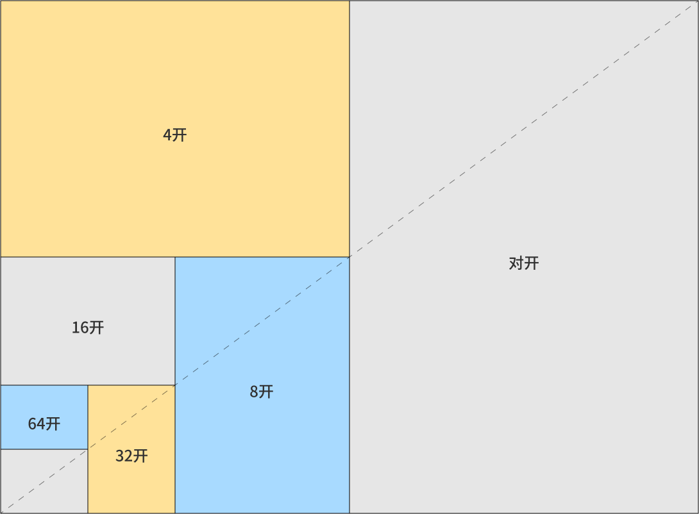

书籍封面设计扫盲

书的基本组成
flowchart TD
A[书的基本组成] --> B[外部结构]
A --> C[内部结构]
B --> B1[封面]
B --> B2[封底]
B --> B3[书脊]
B --> B4[勒口]
B --> B5[护封]
B --> B6[腰封]
C --> C1[衬页]
C --> C2[扉页]
C --> C3[版权页]
C --> C4[正文页]
C --> C5[辅文页]
外部结构
书的外部结构起到保护、宣传、美化书籍的作用。

- 封面 (Front Cover)：一般包含书名、作者、出版社、配图、价值提炼语
- 书脊 (Spine)：一般包含书名、作者、出版社
- 封底 (Back Cover)：包含条形码、定价、推荐语、价值提炼
- 勒口 (Flap）：封面或护封延伸向书内折的部分，也称为折口。通常包括作者简介、内容提要、推荐语等内容。
- 护封 (Dust Jacket)：包裹在最外层可取下的外封面，包裹整本书，起到美观和保护作用。
- 腰封 (Belly Band)：类似护封，但只包裹书的下半部分。主要用于宣传，通常包含获得荣誉和名家推荐语等。
内部结构

- 衬页：精装书特有页面，是连接书芯和封皮的对折页，前后各有一张。
- 扉页：内容与封面类似，包含书名、作者、出版社
- 版权页：版权页在扉页背面，用于记录版权信息。
- 正文页：篇章、正文
- 辅文页：前言、目录、后记、注释、参考文献、附录
尺寸

- 开本：书籍成品尺寸。常用开本尺寸表。
| 原纸尺寸 (mm) | 1/8 (8开) (mm) | 1/12 (12开) (mm) | 1/16 (16开) (mm) | 1/24 (24开) (mm) | 1/32 (32开) (mm) | 1/48 (48开) (mm) | 1/64 (64开) (mm) |
|---|---|---|---|---|---|---|---|
| 787 × 1092 | 260 × 376 | 255 × 260 | 185 × 260 | 165 × 180 | 130 × 184 | 124 × 127 | 92 × 126 |
| 850 × 1168 | 280 × 406 | 275 × 280 | 203 × 280 | 185 × 205 | 140 × 203 | 135 × 137 | 101 × 137 |
| 880 × 1230 | 296 × 420 | 285 × 296 | 210 × 296 | 195 × 210 | 145 × 210 | 140 × 145 | 105 × 144 |
| 889 × 1194 | 285 × 420 | 285 × 290 | 210 × 285 | 190 × 210 | 142 × 210 | 140 × 142 | 105 × 138 |
| 1000 × 1400 | 338 × 490 | 325 × 338 | 243 × 340 | 223 × 243 | 165 × 243 | 160 × 165 | 119 × 160 |
- 出血：给裁切预留的误差量。一般不小于 3mm，所以设计稿尺寸应在成品尺寸边缘外扩至少 3mm。
参考资料
部分图源：MockupTree
发布于:
2025/9/5